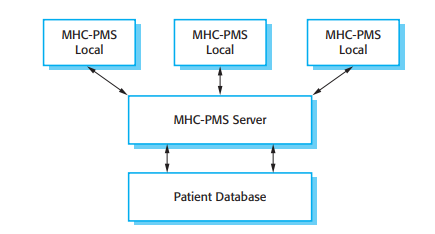
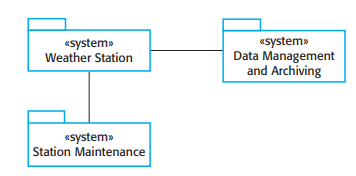

C1
Why We Can't Run the Modern World Without Software?
National infrastructures and utilities are controlled by computer-based systems and most electrical products include a computer and controlling software. Industrial manufacturing and distribution is completely computerized, as is the financial system. Entertainment, including the music industry, computer games, and film and television, is software intensive. Therefore, software engineering is essential for the functioning of national and international societies. Software systems are abstract and intangible. They are not constrained by the properties of materials, governed by physical laws, or by manufacturing processes. This simplifies software engineering, as there are no natural limits to the potential of software. However, because of the lack of physical constraints, software systems can quickly become extremely complex, difficult to understand, and expensive to change.
2 Main Factors that Affect How Modern Systems are Developed and Maintained
1. Increasing Demands
As software engineering techniques evolve, expectations grow rapidly. Systems must be delivered faster, handle greater complexity, and include new capabilities once thought impossible. However, existing methods often struggle to keep up, requiring continuous development of new engineering approaches.
2. Low Expectations
Many companies build software without applying proper engineering methods, leading to unreliable and costly systems. This lack of discipline results in poor quality and inefficiency. Improved software engineering education and training are vital to overcoming these challenges.
As demands for larger and smarter systems grow, new software engineering techniques emerge to meet them. The field remains essential to progress—fueling communication, safety, exploration, and global innovation.
1.1 Professional Software Development
Overview
Professional software development focuses on creating software for business, industrial, or commercial use — usually developed by teams rather than individuals. Unlike personal or hobbyist programming, professional software requires thorough documentation, maintenance, and configuration to ensure reliability and usability. Software engineering supports this process by providing structured methods for system design, specification, and evolution. Ultimately, professional software goes beyond writing code — it includes all necessary resources that make it functional, maintainable, and user-friendly.
| Questions | Answer |
|---|---|
| What is software? | Computer programs and associated documentation. Software products may be developed for a particular customer or may be developed for a general market. |
| What are the attributes of good software? | Good software should deliver the required functionality and performance to the user and should be maintainable, dependable, and usable. |
| What is software engineering? | Software engineering is an engineering discipline that is concerned with all aspects of software production. |
| What are the fundamental software engineering activities? | Software specification, software development, software validation, and software evolution. |
| What is the difference between software engineering and computer science? | Computer science focuses on theory and fundamentals; software engineering is concerned with the practicalities of developing and delivering useful software. |
| What is the difference between software engineering and system engineering? | System engineering is concerned with all aspects of computer-based systems development including hardware, software, and process engineering. Software engineering is part of this more general process. |
| What are the key challenges facing software engineering? | Coping with increasing diversity, demands for reduced delivery times, and developing trustworthy software. |
| What are the costs of software engineering? | Roughly 60% of software costs are development costs; 40% are testing costs. For custom software, evolution costs often exceed development costs. |
| What are the best software engineering techniques and methods? | While all software projects must be professionally managed, different techniques are appropriate for different types of system. Games should use prototypes, while safety-critical systems require complete specifications. |
| What differences has the Web made to software engineering? | The Web has led to software services and distributed systems development, advancing programming languages and software reuse. |
Figure 1.1 Frequently asked questions about software
2 Types of Software Products
1. Generic Products
Stand-alone software sold on the open market to any customer. Examples include databases, word processors, drawing packages, project-management tools, and specialized vertical applications such as library or accounting systems.
2. Customized (Bespoke) Products
Software commissioned by a specific customer. Examples include control systems for electronic devices, software supporting business processes, and air traffic control systems.
1.1.1 Software Engineering
Software engineering is an engineering discipline that is concerned with all aspects of software production from the early stages of system specification through to maintaining the system after it has gone into use. In this definition, there are two key phrases
1. Engineering Discipline
Engineers make things work. They apply theories, methods, and tools where these are appropriate, but use them selectively. They always try to discover solutions to problems even when there are no applicable theories and methods. Engineers also recognize that they must work within organizational and financial constraints, so they look for solutions within these constraints.
2. All aspects of software production
Software engineering is not just concerned with the technical processes of software development. It also includes activities such as software project management and the development of tools, methods, and theories to support software production.
| Attribute | Description |
|---|---|
| Maintainability | Software should be written in such a way so that it can evolve to meet the changing needs of customers. This is a critical attribute because software change is an inevitable requirement of a changing business environment. |
| Dependability and security | Software dependability includes a range of characteristics including reliability, security, and safety. Dependable software should not cause physical or economic damage in the event of system failure. Malicious users should not be able to access or damage the system. |
| Efficiency | Software should not make wasteful use of system resources such as memory and processor cycles. Efficiency therefore includes responsiveness, processing time, memory utilization, etc. |
| Usability | Software must be acceptable to the type of users for which it is designed. This means that it must be understandable, usable, and compatible with other systems that they use. |
Figure 1.2 Essential attributes of good software.
4 fundamental activities that are common to all software processes
1. Specification
Defining the software's requirements and constraints to clearly understand what needs to be built.
2. Development
Designing and coding the software components to transform requirements into a functional system.
3. Validation
Testing and reviewing the software to ensure it meets customer requirements and performs as expected.
4. Evolution
Updating and enhancing the software to reflect new business needs, technologies, or user feedback.
Different types of systems require different development processes depending on their purpose and complexity. For instance, real-time systems like aircraft software need full specification before development, while e-commerce systems evolve as they're built. Software engineering is closely related to both computer science and systems engineering — computer science provides the theoretical foundations, while software engineering focuses on practical application in building reliable systems. Systems engineering, on the other hand, deals with the broader integration of hardware, software, and processes to create complete, complex systems.
As I discuss in the next section, there are many different types of software. There is no universal software engineering method or technique that is applicable for all of these. However, there are three general issues that affect many different types of software:
- Heterogeneity: Modern systems must work across diverse devices and platforms, including legacy systems. The challenge is to build flexible and dependable software that can handle this diversity.
- Business and Social Change: Rapid technological and societal shifts demand faster software development. Traditional methods must adapt to deliver value more quickly and efficiently.
- Security and Trust: As software becomes part of daily life, ensuring protection against attacks and maintaining user trust and data security is crucial.
1.1.2 Software Engineering Diversity
Software engineering is a systematic approach to software production that balances cost, schedule, dependability, and customer needs. The methods used vary depending on the organization, software type, and development team. There are no universal techniques suitable for all cases — instead, various methods and tools have evolved over the years.
The type of application being developed largely determines which techniques are most important. Below are the main categories of software applications:
- Stand-alone Applications: Run on a local computer without network connections, such as office suites, CAD programs, and photo editors.
- Interactive Transaction-Based Applications: Operate remotely and are accessed via PCs or browsers. Examples include e-commerce sites, business systems, and cloud-based services.
- Embedded Control Systems: Control and manage hardware devices, such as car braking systems, phone software, or microwave controls.
- Batch Processing Systems: Process large sets of data periodically, such as billing or payroll systems.
- Entertainment Systems: Designed mainly for personal enjoyment—mostly games where user interaction quality is key.
- Modeling and Simulation Systems: Used by scientists and engineers to simulate complex physical processes, often requiring high-performance computing.
- Data Collection Systems: Gather data from sensors in real-world environments and transmit it for processing, often operating in harsh conditions.
- Systems of Systems: Combine multiple software systems—some generic, some custom-built—to work together in one environment.
Software engineering techniques differ depending on the system type. For instance, embedded systems prioritize safety and stability, while web-based systems emphasize speed and iterative updates.
Despite these differences, all software systems share common fundamentals:
- They must follow a managed and well-understood development process.
- Dependability, performance, and security are essential for every system.
- Clear understanding and management of requirements are crucial.
- Existing resources and reusable components should be used effectively.
These principles—process management, dependability, requirements, and reuse—apply to all forms of professional software development, regardless of implementation differences.
1.1.3 Software Engineering and the Web
The rise of the World Wide Web transformed how software is developed and used. Initially, the Web was mainly for information sharing, but as browsers became more powerful, web-based systems emerged—allowing software to run on servers instead of local computers. This made upgrades easier and cheaper.
The evolution continued with web services and cloud computing, where software is accessed online rather than installed locally. Businesses shifted from monolithic systems to distributed, component-based architectures.
Key changes in web-based software engineering include:
- Software Reuse: Web-based systems are now built by assembling pre-existing software components and services, promoting efficiency and consistency in development.
- Incremental Development: Since it's often impossible to define all requirements in advance, web systems are developed and delivered in iterative phases to adapt to changing needs.
- Browser-Constrained Interfaces: User interfaces are limited by browser capabilities, so most web apps rely on web forms and scripts rather than fully customized designs.
Despite these shifts, the core principles of software engineering—such as process management, dependability, and requirements control—remain essential.
1.2 Software Engineering Ethics
Like other engineering disciplines, software engineering operates within a social and legal framework that limits professional freedom. As a software engineer, you must recognize that your work involves responsibilities beyond technical expertise. Ethical and moral behavior is essential to maintaining respect as a professional. You must uphold honesty, integrity, and avoid actions that could harm others or the reputation of the profession.
- Confidentiality: Always respect the confidentiality of your employers or clients, even if no formal agreement has been signed.
- Competence: Do not misrepresent your skills or accept tasks beyond your level of expertise.
- Intellectual Property Rights: Be aware of laws related to patents, copyrights, and other intellectual property. Protect the rights of your employers and clients.
- Computer Misuse: Never use your technical knowledge to harm or exploit others' systems. This includes both minor misuse and serious offenses such as spreading malware.

Figure 1.3 The ACM/IEEE Code of Ethics (© IEEE/ACM 1999)
Professional organizations like the ACM and IEEE establish codes of ethics to guide software engineers in responsible and professional behavior. The ACM/IEEE Code of Ethics outlines eight key principles emphasizing public interest, client and employer responsibility, product quality, independent judgment, ethical management, professional integrity, fairness to colleagues, and lifelong learning.
Software engineers must recognize their power to do good or harm through their work and act ethically to protect public welfare. Ethical dilemmas often arise, such as conflicts with management, handling unsafe practices, or working on military systems. These situations require careful judgment, balancing professional responsibility, honesty, and respect for employers.
Overall, ethics in software engineering are best understood through practical codes of conduct rather than abstract philosophy, as real-world examples make ethical issues more relatable and actionable.
1.3 Case Studies
To illustrate software engineering concepts, three types of systems are used as case studies. Each demonstrates how practices differ depending on the system's purpose and requirements.
- Embedded System: A software system embedded in hardware, such as a medical device controller. Focuses on issues like size, responsiveness, and power management.
- Information System: Manages and provides access to data, such as a medical records system. Emphasizes security, privacy, and data integrity.
- Sensor-Based Data Collection System: Collects and processes data from sensors, like a wilderness weather station. Prioritizes reliability and maintainability in harsh environments.
1.3.1 An insulin Pump Control System
An insulin pump is an embedded medical system that mimics the pancreas by automatically delivering insulin to regulate blood sugar levels in diabetic patients. It collects data from a sensor, calculates the required insulin dose, and delivers it through a pump. Traditional insulin injection methods are less precise, as they depend on manual measurements and timing. Automated insulin systems improve safety by preventing dangerously high or low blood sugar levels and could eventually be permanently integrated into patients' bodies.

Figure 1.4: Insulin pump Hardware

Figure 1.5 Activity Model of the Insulin Pump
Figure 1.4 shows the hardware components and organization of the insulin pump. To understand the examples in this book, all you need to know is that the blood sensor measures the electrical conductivity of the blood under different conditions and that these values can be related to the blood sugar level. The insulin pump delivers one unit of insulin in response to a single pulse from a controller. Therefore, to deliver 10 units of insulin, the controller sends 10 pulses to the pump. Figure 1.5 is a UML activity model that illustrates how the software transforms an input blood sugar level to a sequence of commands that drive the insulin pump.
Clearly, this is a safety-critical system. If the pump fails to operate or does not operate correctly, then the user's health may be damaged or they may fall into a coma because their blood sugar levels are too high or too low. There are, therefore, two essential high-level requirements that this system must meet:
- The pump must be ready and able to deliver insulin whenever the user needs it.
- The pump must work reliably and give the right dose of insulin for the current blood sugar level.

Figure 1.6 The organization of the MHC-PMS
The system must therefore be designed and implemented to ensure that the system always meets these requirements. More detailed requirements and discussions of how to ensure that the system is safe are discussed in later chapters.
1.3.2 A patient Information System for Mental Health Care
The MHC-PMS is a medical information system that manages records of patients with mental health conditions and the treatments they receive. It uses a centralized database of patient data but can also run locally on personal computers, allowing access even in clinics without secure network connectivity. When connected, the system synchronizes with the main database, ensuring updated and accurate records across all locations.
The system aims to improve healthcare efficiency and support decision-making in mental health services. Its primary goals are to generate management information that helps health service managers evaluate performance against set targets and to provide medical staff with timely information for patient treatment. Users include doctors, nurses, and health visitors who deliver care, as well as receptionists, records staff, and administrators who handle appointments, data management, and reporting.
The system is used to record information about patients (name, address, age, next of kin, etc.), consultations (date, doctor seen, subjective impressions of the patient, etc.), conditions, and treatments. Reports are generated at regular intervals for medical staff and health authority managers. Typically, reports for medical staff focus on information about individual patients whereas management reports are anonymized and are concerned with conditions, costs of treatment, etc.
The key features of the system are:
- Individual Care Management: Clinicians can create records for patients, edit the information in the system, view patient history, and access data summaries. This helps doctors who have not previously met a patient quickly understand the key problems and treatments prescribed.
- Patient Monitoring: The system regularly monitors patient records and issues warnings if potential problems are detected. This includes tracking patients who have been sectioned and ensuring that legally required checks are carried out on time.
- Administrative Reporting: Monthly management reports are generated showing the number of patients treated at each clinic, admissions and discharges, patients sectioned, prescribed drugs, and their costs.

Figure 1.7 The weather station's environment system
Some mental illnesses cause patients to become suicidal or a danger to other people. Wherever possible, the system should warn medical staff about potentially suicidal or dangerous patients.
The overall design of the system has to take into account privacy and safety requirements. The system must be available when needed otherwise safety may be compromised and it may be impossible to prescribe the correct medication to patients. There is a potential conflict here—privacy is easiest to maintain when there is only a single copy of the system data. However, to ensure availability in the event of server failure or when disconnected from a network, multiple copies of the data should be maintained. I discuss the trade-offs between these requirements in later chapters.
1.3.3 A Wilderness Weather Station
To help monitor climate change and to improve the accuracy of weather forecasts in remote areas, the government of a country with large areas of wilderness decides to deploy several hundred weather stations in remote areas. These weather stations collect data from a set of instruments that measure temperature and pressure, sunshine, rainfall, wind speed, and wind direction.
Wilderness weather stations are part of a larger system (Figure 1.7), which is a weather information system that collects data from weather stations and makes it available to other systems for processing. The systems in Figure 1.7 are:
- The Weather Station System: Responsible for collecting weather data, performing initial data processing, and transmitting it to the data management system.
- The Data Management and Archiving System: Collects data from all wilderness weather stations, processes and analyzes it, and archives it for retrieval by other systems, such as weather forecasting tools.
- The Station Maintenance System: Communicates via satellite with all wilderness weather stations to monitor system health, provide problem reports, update embedded software, and remotely control a station in case of issues.
The weather station system is composed of multiple instruments that measure parameters like wind, temperature, pressure, and rainfall. Each instrument is controlled by software that periodically collects and manages data. Observations are taken frequently, with local processing and aggregation performed before transmitting data to the data management system. If communication fails, the system stores the data locally until the connection is restored.
Each weather station is battery-powered and must be entirely self-contained—there are no external power or network cables available. All communications are through a relatively slow-speed satellite link and the weather station must include some mechanism (solar or wind power) to charge its batteries. As they are deployed in wilderness areas, they are exposed to severe environmental conditions and may be damaged by animals. The station software is therefore not just concerned with data collection. It must also:
- Monitoring: The system monitors instruments, power, and communication hardware, reporting any faults to the management system.
- Power Management: It ensures batteries are charged when conditions allow and shuts down generators during potentially damaging weather.
- Dynamic Reconfiguration: Parts of the software can be replaced with new versions, and backup instruments can be switched in when failures occur.
Because weather stations have to be self-contained and unattended, this means that the software installed is complex, even though the data collection functionality is fairly simple.